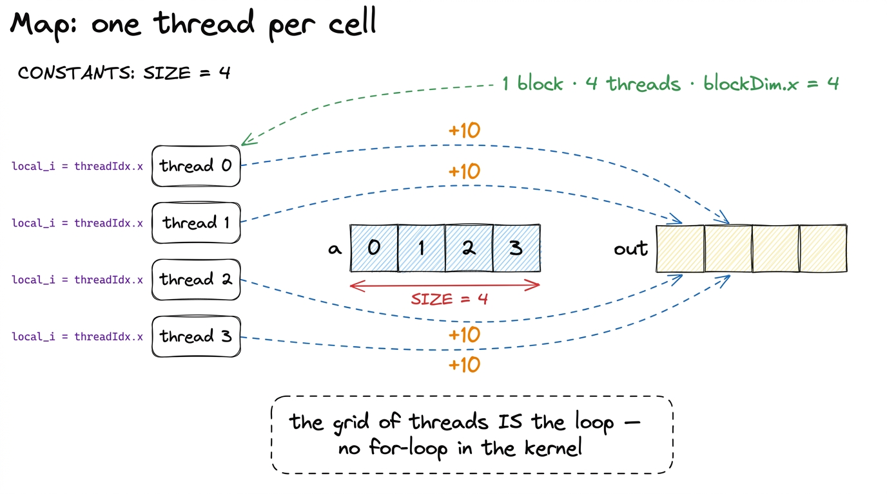
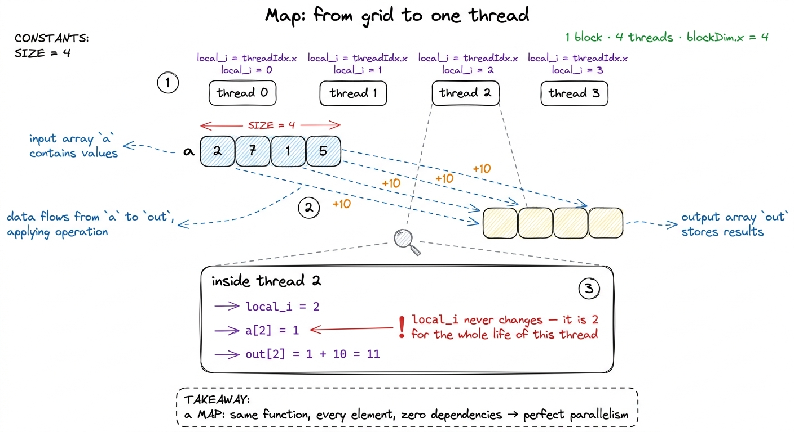
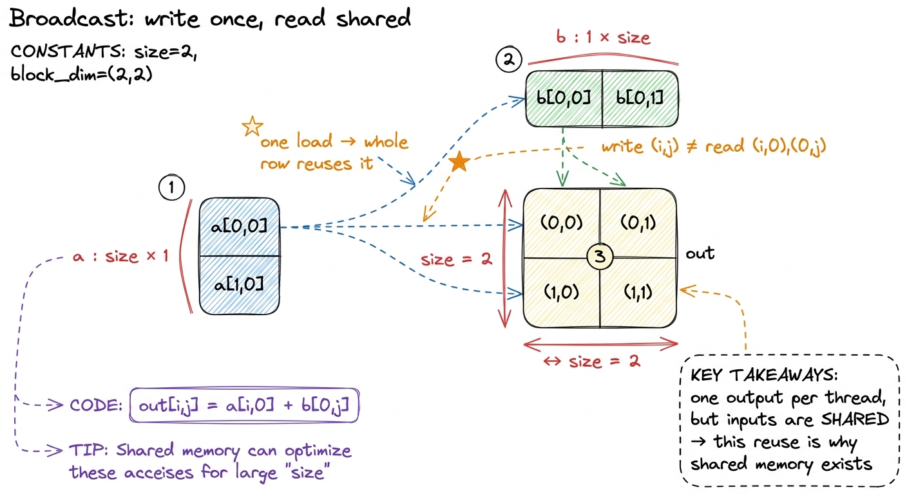
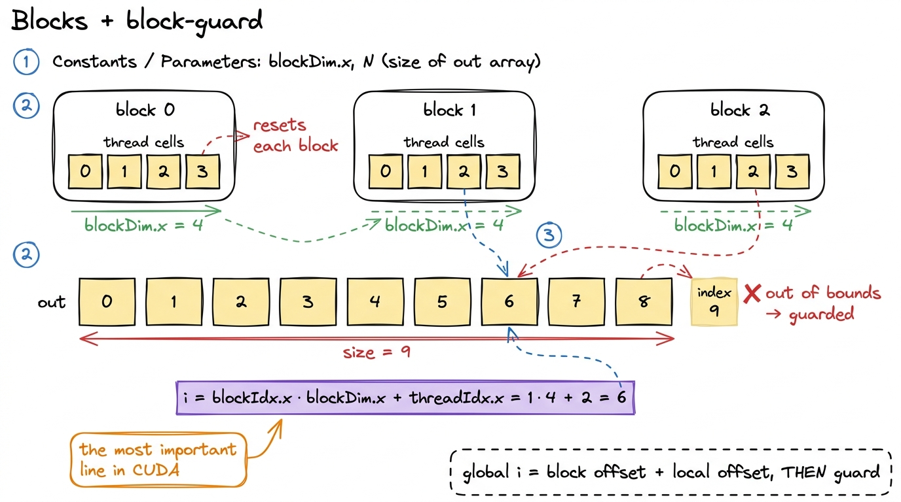
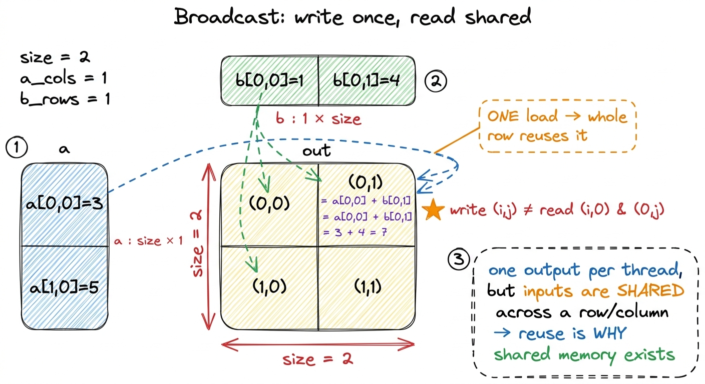
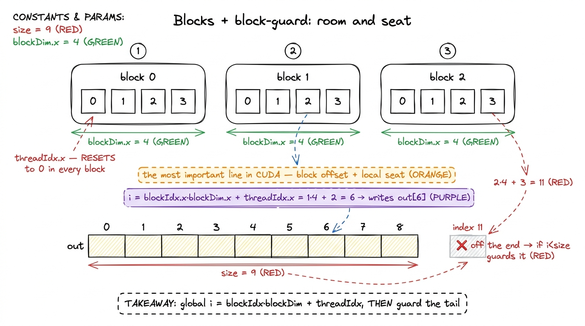
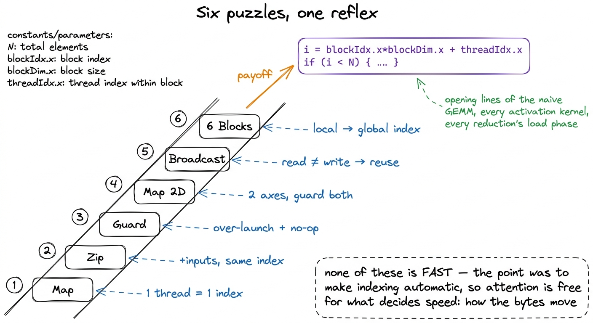

GPU Puzzles, walkthrough I PRACTICE
Here is a question that sounds too simple to be interesting, but isn't: how do you add 10 to every number in an array, using a machine that has thousands of tiny workers all running at the same time? On a CPU you'd write a loop — for i in range(N): out[i] = a[i] + 10 — and the CPU would walk the array one element at a time, fast, in order. A GPU refuses to work that way. A GPU wants to throw thousands of workers at the array simultaneously, each one touching a different element, and have them all finish at roughly the same instant. To use it, you have to stop thinking "loop over the array" and start thinking "assign one worker per element." That single mental flip is the hardest part of learning GPU programming, and it is what this article is about.
I'm going to teach it the way it finally clicked for me: through the first six of Sasha Rush's GPU-Puzzles. Each puzzle is a one-line kernel. They look trivial — genuinely, the "solution" to each is a single line of code — but that's the trap and also the gift. Because the code is so short, there's nowhere to hide. All the difficulty lives in the indexing: figuring out which element this particular worker owns. Get the indexing right and you've internalized the one idea that underlies every kernel on this site, from the naive GEMM to FlashAttention. Get it wrong and nothing else you learn will help.
We'll go slowly. By the end of six one-liners you will have written, by hand, the exact two lines of code that open essentially every CUDA kernel ever shipped — the lines that run in vLLM and PyTorch right now, on the H100s serving models as you read this.
1 The puzzles are written in Python against a tiny NUMBA-style CUDA simulator, not real .cu files, so you can run every one in a notebook with no GPU at all. The index arithmetic is byte-for-byte identical to CUDA C: cuda.threadIdx.x in the puzzle is exactly threadIdx.x in a real kernel, cuda.blockIdx.x is blockIdx.x, and so on. Everything you learn here transfers to the real thing unchanged.
The one mental model: one thread, one element
Before any code, let me plant the picture we'll reuse for the entire article. I'll call it the stamp model.
Imagine your output array is a row of empty cells, like an ice-cube tray. And imagine you have a pile of identical rubber stamps, one per cell. Each stamp knows how to do exactly one thing — "read the input here, add 10, write the result here" — but it has no idea which cell it belongs to until you hand it a coordinate. You press all the stamps down at once. Each one lands on its own cell, does its tiny job, and lifts off. There is no order. There is no "first cell, then second cell." They all fire together.
In CUDA the stamps are called threads, and the coordinate each one gets handed is called threadIdx.x. A thread is the smallest unit of work the GPU runs — one worker, one stamp.2 If you want the full hierarchy — threads group into warps, warps into blocks, blocks into a grid — it's laid out in threads, warps, blocks, and grids. For the first four puzzles you only need "a thread is one worker with its own coordinate," so I'll introduce the rest only when a puzzle forces us to. The crucial, load-bearing fact is this: threadIdx.x is not a loop counter you advance — it is a coordinate you are handed. In a serial loop, one worker visits index 0, then 1, then 2. Here, four different workers are each born knowing their own index, and each one only ever sees its own. Nobody iterates. The grid of threads is the loop.

figure rendering · The mental model for the whole article: a CPU walks the array; a GPU sHold that picture. Every puzzle below is a small deformation of it — a second input, a surplus of stamps, a second axis, shared reads, more than one tray. The stamp never changes; only the bookkeeping around "which cell is mine" does.
One practical note on how the puzzles are run. The harness hands you a function like call(out, a), and — this is the part that trips everyone up the first time — that function runs once per thread, in parallel, not once total. You are not writing the loop. You are writing the body of the stamp: what one thread does. Inside it you're given cuda.threadIdx.x (this thread's coordinate), cuda.blockIdx.x (which block it's in — ignore for now), and cuda.blockDim.x (how wide a block is — also ignore for now). Your only job is to work out which element of out this thread owns, and write it.
Puzzle 1 — Map: the identity between a thread and an index
The first puzzle: compute out[i] = a[i] + 10 over an array of SIZE = 4, launched with exactly four threads in one block. Here is the whole kernel.
def call(out, a) -> None:
local_i = cuda.threadIdx.x
out[local_i] = a[local_i] + 10That's it. That's the entire solution. Let's slow down and watch it happen, because this is where the mental model becomes concrete.
The harness launches four threads. Thread 0 wakes up with threadIdx.x == 0, so local_i = 0, and it executes out[0] = a[0] + 10. At the same time, thread 3 wakes up with threadIdx.x == 3, sets local_i = 3, and executes out[3] = a[3] + 10. Neither thread knows the other exists. Neither one loops. Each does one add and one write and is finished. Four stamps, four cells, one press.
Now the question I want you to actually sit with: why is this a different way of thinking, and not just a fancy loop? Because in the loop version, the number i is a value that changes over time — the same variable holding 0, then 1, then 2. In the kernel version, local_i never changes. It is 0 forever, in thread 0. It is 3 forever, in thread 3. There is no "over time." The four values of local_i exist simultaneously, in four separate copies of the function. Once you see that the index is a per-worker constant rather than a shared counter, you've got it — that's the reflex the whole exercise exists to build.
This operation has a name: a map. You apply the same function independently to every element. Maps are the friendliest thing a GPU does, because there are zero dependencies between elements — thread 3 never needs anything thread 2 computed. Perfect parallelism. relu, x + 1, gelu, scaling a tensor by a constant — all maps, all this exact shape.

figure rendering · Puzzle 1, zoomed into a single thread. The index is a per-thread constPuzzle 2 — Zip: a second input changes nothing (and that's the point)
Zip adds two arrays: out[i] = a[i] + b[i], still SIZE = 4, still four threads. The solution is what you'd guess.
def call(out, a, b) -> None:
local_i = cuda.threadIdx.x
out[local_i] = a[local_i] + b[local_i]Here's the natural objection: if the answer is this obvious, why is it a separate puzzle at all? Because the lesson is precisely that it's obvious. A second input buffer changes nothing about the indexing. Each thread still owns one index local_i, and it reads that same index from both inputs. The stamp got a little wider — it now presses down on two input trays instead of one — but it still lands on exactly one output cell. Add a third input, a fourth, ten inputs, and the story is identical: one output index, read straight down from all inputs.
Let's do a little arithmetic, because it foreshadows something important. For each element in Zip, count the memory touches and the math. We read a[i], we read b[i], we write out[i] — that's 3 memory operations. And we do 1 addition. So the ratio of arithmetic to memory movement is 1 flop for every 3 element-touches. Now here's the thing that should bother you: that ratio doesn't improve if you add more inputs. A ten-input sum does 9 adds but 11 memory touches — still roughly one flop per memory touch. The work per element stays proportional to the memory you move.
This is the seed of arithmetic intensity, and it's why element-wise (or pointwise) kernels — add, mul, relu — are so brutally memory-bound. The GPU can do arithmetic vastly faster than it can move bytes from memory. An H100 can do on the order of a thousand floating-point operations in the time it takes to fetch a single number from its main memory.3 Rough but real: an H100 SXM does ~67 TFLOP/s of FP32 and has ~3.35 TB/s of HBM bandwidth. Dividing, that's roughly 20 FLOPs per byte, or ~80 FLOPs per 4-byte float, just to break even. A kernel doing 1 flop per float touched is off that break-even point by a factor of ~80 — it will spend ~99% of its time waiting on memory. This is the whole reason operator fusion exists. So a kernel that does one add per three memory touches will spend almost all its time waiting for memory, and no cleverness in how you write the add can fix that. Zip is where you first feel, in your fingers, the ratio that the entire roofline model is built around.
Puzzle 3 — Guards: launching too many threads on purpose
Now the harness does something that looks like a mistake. SIZE is still 4, but it launches 8 threads. You have twice as many stamps as cells. Threads 4, 5, 6, 7 have no element to write. If they run the Puzzle 1 code, thread 4 will try to execute out[4] = a[4] + 10 — but a[4] is off the end of a 4-element array. On the puzzle simulator that's an error; on a real GPU it's an out-of-bounds access, which is undefined behavior at best and a hard memory fault that kills your kernel at worst.
The fix is the single most repeated pattern in all of CUDA. It's called a guard.
def call(out, a, size) -> None:
local_i = cuda.threadIdx.x
if local_i < size:
out[local_i] = a[local_i] + 10"If my index is inside the array, do the work; otherwise do nothing." Thread 4 checks 4 < 4, finds it false, and quietly skips the write. It doesn't crash, it doesn't stall its neighbors — it just sits out this instruction and finishes.
But wait — the deeper question is why would anyone launch 8 threads for 4 elements in the first place? It looks wasteful and dumb. The answer is that you almost never get to choose a launch that exactly matches your data. Threads are launched in whole blocks, and block sizes are chosen for hardware reasons — 32, 64, 128, 256 — not to match your array. Your array, meanwhile, is whatever length the model handed you: 4, or 1000, or 50,257 (a real vocabulary size). Those two numbers rarely divide evenly. So the standard move is to compute how many blocks you need by rounding up — gridDim = ceil(N / blockDim) — which deliberately over-launches, and then let the surplus threads at the tail no-op via the guard.4 Concretely: for N = 1000 with a block size of 256, ceil(1000 / 256) = 4 blocks = 1024 threads. The last 24 threads (indices 1000–1023) fall off the end and are guarded off. The guard is essentially free — a single predicated compare that the tail threads resolve to a no-op in one cycle. You pay one cheap instruction to buy the freedom to pick any block size you like.

figure rendering · Puzzle 3. Without the guard the four surplus threads read off the end;There's a quieter second lesson hiding here, and it matters later. When the eight threads hit the if, four take the "write" path and four take the "do nothing" path. That's a branch, and when threads that run in lockstep disagree on a branch, the hardware has to handle both paths. Here it's cheap — the two paths are "one write" and "nothing," so the split costs almost nothing. But the general mechanism, a group of threads diverging on a branch, is SIMT divergence, and it is not always this cheap. When the two sides of an if are both expensive, divergence can cut your throughput in half. File that away; Puzzle 3 is where the reflex is born, and the sidenote is where the danger lives.
Puzzle 4 — Map 2D: a second axis, the same idea
The next puzzle moves to a 2 × 2 array and launches a 3 × 3 block of threads, using both threadIdx.x and threadIdx.y.
def call(out, a, size) -> None:
i = cuda.threadIdx.x
j = cuda.threadIdx.y
if i < size and j < size:
out[i, j] = a[i, j] + 10Two things get installed at once, and both are small extensions of things you already have.
First, threads can be laid out in up to three dimensions. threadIdx has .x, .y, and .z. Why offer this? Because so much of what GPUs compute is naturally 2D or 3D — images (height × width), matrices (rows × columns), video (height × width × time). If your data is a 2D grid, it's cleaner to address it with a 2D grid of threads than to flatten everything into one long line and do division-and-modulo to recover the coordinates. Thread (i, j) owns cell (i, j). The stamp model is completely unchanged — one thread, one cell — the cell just has two coordinates now instead of one.
Second, the guard now has to check both axes. We launched a 3 × 3 block over a 2 × 2 array, so we over-cover on both edges: there's a surplus column (i = 2) and a surplus row (j = 2). A thread at (2, 0) is off the right edge; a thread at (0, 2) is off the bottom. So the guard becomes if i < size and j < size — it fails if either coordinate is out of range. The rule generalizes cleanly: the guard scales with the dimensionality of your problem. A 1D kernel guards one axis; a 2D kernel guards two; a 3D kernel guards three.
Hold onto this (i, j) layout, because it is exactly the shape we use in the naive GEMM: one thread per output element of a matrix, with m (which row of C) and n (which column of C) playing the roles of i and j. When you write your first real matrix-multiply kernel, this puzzle is what your fingers will remember.

figure rendering · Puzzle 4. A 3×3 launch over a 2×2 array; the extra row and column arePuzzle 5 — Broadcast: the read index and the write index can differ
Everything so far has had a comforting symmetry: thread (i, j) reads from position (i, j) and writes to position (i, j). Read and write lined up. Broadcast is the first puzzle where they come apart, and it's the most conceptually important of the six.
The output is 2 × 2. But the inputs are a column vector a of shape SIZE × 1 and a row vector b of shape 1 × SIZE. Every output cell is the sum of one element from the column and one from the row.
def call(out, a, b, size) -> None:
i = cuda.threadIdx.x
j = cuda.threadIdx.y
if i < size and j < size:
out[i, j] = a[i, 0] + b[0, j]Read those indices slowly, because this is the whole point. Thread (i, j) writes out[i, j] — same as before. But it reads a[i, 0] and b[0, j]. The write coordinate and the two read coordinates are different projections of the same thread ID. The thread throws away j when it reads from the column (it only needs the row index i), and throws away i when it reads from the row (it only needs the column index j).
Why does this matter so much? Because it detaches the mental model from a mistake people quietly carry: "one thread owns one element of everything." No. One thread owns one output cell. What it reads is whatever that output cell depends on — and different threads are free to read the same input. Look at what happens: a[i, 0] gets read by every thread in row i. In a 2 × 2 output, a[0, 0] is read by both out[0,0] and out[0,1]. One value, loaded from memory, feeds two output cells. That's reuse.
And reuse is the entire economic argument for the fast on-chip memory we'll spend later articles on. Here it's tiny — one value feeding two cells. But scale it up. In a matrix multiply, one row of A feeds every column of the output; one loaded value gets reused across a whole row of results. If every thread re-fetches it from slow main memory, you drown in redundant memory traffic. If instead you load it once into fast shared memory and let the whole row read it from there, you win.5 This is exactly the redundant-read problem we deliberately leave unfixed in the naive GEMM: thread (m, n) reads all of row m of A and all of column n of B straight from global memory, and every other thread sharing that row or column re-reads the identical values. Broadcast is the two-cell toy version of that waste; shared memory tiling is the grown-up fix that turns it into a several-fold speedup. Broadcast is small, but it's the first puzzle that is really about memory rather than arithmetic — and memory, as Zip already hinted, is where all the performance is won or lost.

figure rendering · Puzzle 5. The write index and the read indices are different projectioPuzzle 6 — Blocks and the global index: the most important line in CUDA
Everything so far fit in a single block. That can't last. A block is capped at 1024 threads, and it has to fit on a single Streaming Multiprocessor (SM) — the physical processing unit that runs it.6 The exact limit is blockDim.x * blockDim.y * blockDim.z ≤ 1024 threads per block, and the whole block must fit on one SM because the threads in a block can share memory and synchronize with each other, which only works if they're physically co-located. To cover a big array you launch many blocks and let them spread across the GPU's SMs — an H100 has 132 of them. How big to make each block is a real tuning decision; see occupancy. Your arrays, meanwhile, are millions of elements long. So real kernels always use many blocks, and Puzzle 6 is where that world opens up.
The setup: SIZE = 9, but each block has only 4 threads, so you need 3 blocks to cover 9 elements. And here's the wrinkle that breaks everything you've relied on so far: threadIdx.x now only tells you a thread's position within its own block. It resets to 0 at the start of every block. So there are three different threads all reporting threadIdx.x == 1 — one in each block — and if you index with threadIdx.x alone, all three of them fight over out[1] while out[5] never gets written. threadIdx.x is no longer a unique index. It's a local index.
To recover a unique global index, you reconstruct it from three pieces.
def call(out, a, size) -> None:
i = cuda.blockIdx.x * cuda.blockDim.x + cuda.threadIdx.x
if i < size:
out[i] = a[i] + 10This line — blockIdx.x * blockDim.x + threadIdx.x — is the single most important formula in CUDA, and it deserves to be read one term at a time, because it's really just a room-and-seat address. blockDim.x is how wide a block is — 4 here — like the number of seats in each row. blockIdx.x is which block you're in — 0, 1, or 2 — like your row number. Multiply them, blockIdx.x * blockDim.x, and you get the offset to the start of your block: block 0 starts at 0, block 1 starts at 4, block 2 starts at 8. Then add threadIdx.x, your seat within the row, to land on your exact global slot.
Let's do it by hand. Take block 1, thread 2. Global index = 1 * 4 + 2 = 6. So this thread writes out[6]. Take block 2, thread 3: 2 * 4 + 3 = 11. But our array only has valid indices 0 through 8 — index 11 is off the end! And that's not a bug, it's the guard earning its keep again: with 3 blocks of 4 threads we launched 12 threads for 9 elements, so the last 3 (global indices 9, 10, 11) fall off and get guarded away by if i < size. Everything from Puzzle 3 comes back, now that the over-launch is happening across block boundaries.
This combination — the global-index formula plus the boundary check — is the block-guard, and it is the canonical opening of essentially every 1D CUDA kernel ever written:
i = blockIdx.x * blockDim.x + threadIdx.x
if i < N:
... # do this thread's work
figure rendering · Puzzle 6. Reconstructing a unique global index across three blocks, thThe ladder these six puzzles built
Step back and line them up, because a deliberate progression appears — each puzzle is one small idea stacked on the last.
- Map — a thread owns one index; the grid of threads is the loop.
- Zip — extra inputs don't change the index; and the flop-to-byte ratio is why element-wise ops are memory-bound.
- Guards — you over-launch on purpose (
ceil(N / blockDim)) and let surplus threads cheaply no-op. - Map 2D — index in two dimensions; the guard scales with dimensionality.
- Broadcast — the write index and read indices can differ; shared reads mean reuse, which is why shared memory exists.
- Blocks —
threadIdx.xis local, so build the global index, then guard it.

figure rendering · The six puzzles form a ladder whose top rung is the two lines that opeThat last combination — i = blockIdx.x * blockDim.x + threadIdx.x followed by if (i < N) — is not a puzzle trick. It is the first two lines of the naive GEMM kernel, of every activation kernel, of every reduction's load phase, of the elementwise epilogue that vLLM fuses onto its matmuls today. You have now written it, by hand, six times. It should feel automatic — that was the entire purpose of the exercise.
And here's the honest scope note. None of these six kernels is fast. A pure element-wise add is memory-bound — we did the napkin math back in Zip, one flop per few bytes, roughly a factor of 80 below the point where the H100's compute could keep its memory system busy. It will sit far below the roofline no matter how cleverly you write it. And we haven't touched the things that actually make kernels fast: shared memory, warps, memory coalescing, tiling. But speed was never the point of the first six. The point was to make the indexing automatic — to burn the coordinate arithmetic so deep into your hands that, when we start caring about memory traffic and profiling with Nsight Compute, you're not spending any thought on "which element is mine." That whole question is answered reflexively, and your full attention is free for the one thing that decides performance: how the bytes move.
In the next walkthrough, the puzzles turn to shared memory, pooling, and reductions — and for the first time the one-thread-one-element model has to break, because the threads finally have to cooperate: load a tile together, synchronize, and read each other's work. That's where GPU programming stops being bookkeeping and starts being engineering.